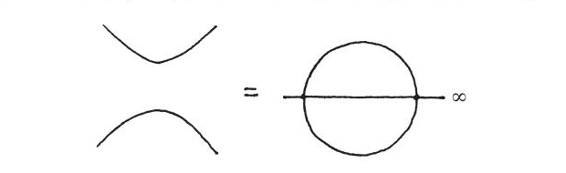
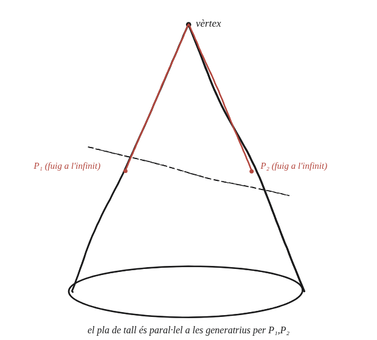

Quan un con es talla amb un pla per formar una hipèrbola, quins dos punts de la circumferència es projecten a l'infinit?

Què hem de produir
La identificació exacta de dos punts concrets d'un cercle base del con —no "en general", sinó els dos punts precisos que, en projectar el cercle des del vèrtex del con cap al pla de tall, se'n van a l'infinit.
Recorda per què un punt se'n va a l'infinit
Un punt es projecta "a l'infinit" exactament quan la recta de projecció —des del punt de projecció, en aquest cas el vèrtex del con— queda paral·lela al pla d'arribada, el pla de tall, en lloc de tallar-lo. Amb el vèrtex del con com a punt de projecció, quines rectes que hi passen són "les rectes de projecció"?
La construcció

Tancar-ho
Les "rectes de projecció" des del vèrtex són exactament les generatrius del con —les rectes rectes que el formen. Dues d'aquestes generatrius —les que passen pels dos punts del cercle base on el con és paral·lel al pla de tall— no arriben mai al pla de tall, com dues rectes paral·leles que no es tallen en el sentit ordinari. Els dos punts del cercle per on passen aquestes dues generatrius són exactament els que se'n van a l'infinit, i per això la hipèrbola té dues branques que s'obren cap enfora sense parar: són la imatge d'un cercle sencer, menys aquests dos punts que han fugit a l'infinit.
Els dos punts que fugen a l'infinit són exactament aquells del cercle base per on passen les dues generatrius del con paral·leles al pla de tall. La hipèrbola és la imatge d'un cercle sencer menys aquests dos punts.
Comprovació
Amb un con d'obertura fixa i un pla de tall que s'inclina gradualment: mentre el pla és menys inclinat que les generatrius del con, la secció és una el·lipse tancada —cap generatriu paral·lela al pla, cap punt fuig a l'infinit. Just quan el pla arriba a ser paral·lel a una generatriu, un sol punt fuig —paràbola. Quan el pla és encara més inclinat que qualsevol generatriu, hi ha dos punts paral·lels —i la secció és una hipèrbola de dues branques.
Aquesta identificació dels dos punts és exactament el que fa falta per situar les esferes de Dandelin: es col·loquen tocant el con al llarg d'aquests mateixos cercles base, i el seu argument depèn de saber exactament on i com el pla de tall es relaciona amb el con.